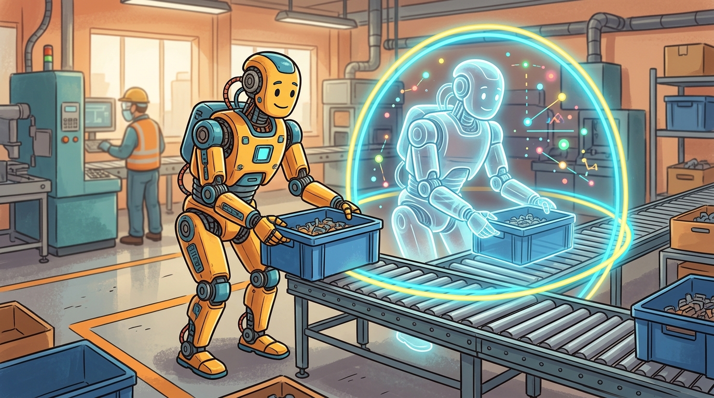

"A humanoid research program is only as strong as its failure replay loop: every hardware miss should become a simulation perturbation."
A Field-Tested Control Loop
A Boston Dynamics-style research track asks whether a humanoid can turn dynamic mobility into useful work. The target is not a single acrobatic clip. The target is reliable mobile manipulation under contact, payload, uncertainty, and human-scale safety constraints.

The Research Contract
The research contract for enterprise humanoids is stricter than a benchmark score: the robot must perform useful material-handling or workstation tasks, recover from ordinary disturbances, expose failures in logs, and improve through simulation, teleoperation, reinforcement learning, and field feedback.
Recent public signals from Boston Dynamics, the Robotics and AI Institute, Toyota Research Institute, Google DeepMind, and NVIDIA all point in the same direction: humanoids need whole-body manipulation, simulation-trained behaviors, foundation-model reasoning, tactile feedback, and runtime safety supervision.
Treat boston dynamics-style loco-manipulation research track like a control-room label. If the label does not tell a future debugger what moved, what sensed, or what failed, it is decoration rather than engineering knowledge.
Large Behavior Models and robotics foundation models are best understood as task-level and behavior-level priors. They do not remove the need for contact mechanics, controller verification, sensor timing, or safety cases.
A humanoid research program is only as strong as its failure replay loop: every hardware miss should become a simulation perturbation, a logging improvement, or a tighter safety condition.
What A Leading Researcher Needs
- Underactuated dynamics, hybrid contact systems, impacts, and contact mode transitions.
- Centroidal planning, footstep planning, spatial momentum, capture regions, and push recovery.
- Whole-body QP or MPC control with equality and inequality constraints.
- Teleoperation, retargeting, motion priors, human demonstration pipelines, and data curation.
- Reinforcement learning with domain randomization, curriculum design, actuator models, and failure replay.
- Tactile and force-aware manipulation for rigid, deformable, articulated, heavy, and delicate objects.
- Runtime supervision, human-zone safety, fleet telemetry, reliability metrics, and task-level safety cases.
Pipeline Pattern
A robust research loop is simulation-first but not simulation-only. Simulation proposes behaviors, hardware reveals the missing dynamics, logs define the next perturbation set, and the training panel expands. The key is to keep the scenario panel stable enough to compare methods while adding targeted disturbances that expose failure causes.
| Stage | Question | Representative Tools |
|---|---|---|
| Task design | What useful work must the robot perform? | Workcell analysis, safety case templates, ROS 2 logs |
| Simulation | Can the behavior survive dynamics and contact perturbations? | Isaac Lab, MuJoCo, MJX, Drake, Genesis |
| Learning | Which skills improve through data? | RL, imitation learning, teleoperation, LeRobot-style data tools |
| Controller integration | Can the policy respect real-time constraints? | Whole-body QP, MPC, ROS 2 control, safety filters |
| Field evaluation | Does the robot recover and keep working? | Scenario panels, fleet telemetry, failure taxonomies |
Evaluation Panel
A credible evaluation panel includes static manipulation, dynamic manipulation, locomotion under terrain variation, payload handling, bimanual coordination, human-zone slowdowns, sensor dropout, and recovery after contact surprises. Each result should include success, recovery, safety intervention, contact slip, energy, latency, and hardware stress metrics.
For a factory tote-moving task, compare three policies on the same workcell: a scripted baseline, a motion-prior policy, and a foundation-model-guided behavior stack. Use the same tote poses, payloads, lighting, floor friction, and human-zone interruptions for all three.
Consider a concrete case: a 12 kg tote must be lifted from a 0.4 m shelf, rotated 90 degrees, and placed on a conveyor 1.2 m away. The scripted baseline achieves 94% success at 0 kg payload uncertainty but drops to 61% when tote mass varies by plus or minus 3 kg because the joint torque limits in the wrist are hard-coded. The motion-prior policy, trained with domain randomization over payloads of 8 to 16 kg in Isaac Lab, achieves 88% success across the full range and recovers from 70% of contact slips autonomously. The foundation-model-guided stack matches the prior policy on nominal runs but adds 340 ms of replanning latency, which causes 12% of human-zone slowdowns to trigger a full stop rather than a graceful deceleration. That latency gap, not accuracy, is what the evaluation panel reveals and what the next training iteration must address.
Use Isaac Lab, MuJoCo, MJX, Drake, ROS 2, LeRobot-style data tooling, and HumanoidBench-style task panels to separate simulation training, model-based control, robot data, and repeatable evaluation.
A foundation-model stack can choose a plausible task plan that the low-level controller cannot execute safely. Always verify the plan through contact, torque, timing, and human-zone constraints.
The most common reason a Boston Dynamics-style research loop plateaus is that the simulation scenario panel diverges from the physical failure distribution. A policy trained in Isaac Lab with randomized floor friction (0.4 to 0.8) will still fail on polished concrete (friction 0.25) if that regime was never added to the panel. The symptom is a high simulator success rate alongside a flat or declining hardware success rate across consecutive training iterations. The fix is not more RL epochs; it is closing the measurement loop: log the contact forces, foot slip events, and joint saturation incidents from every hardware run, cluster them by failure cause, and add the top two clusters as new perturbation ranges in the next simulation batch. Without that specific feedback path, sim-to-real gap compounds rather than shrinks.
Expected output interpretation. The grid contains sixty logged cells because three methods are being compared over four scenarios and five metrics. That explicit panel size matters because it prevents selective reporting and makes it obvious when one method was tested on fewer disturbances or fewer metrics than the others.
The research bar is recoverable autonomy: useful work, physical feasibility, contact-aware control, reproducible evaluation, and visible safety margins in the same artifact.
Can you explain how a field failure becomes a new simulation perturbation, a policy update, and a safety-case artifact?
Design a Boston Dynamics-style evaluation panel for one material-handling task. Include scripted, learned, and foundation-model-guided stacks, then define the telemetry needed to compare them fairly.
Section References
Boston Dynamics Atlas. https://bostondynamics.com/products/atlas/
Official product framing for industrial humanoid automation.
Boston Dynamics and RAI Institute humanoid RL partnership. https://bostondynamics.com/news/boston-dynamics-and-the-robotics-ai-institute-partner/
Official partnership announcement focused on reinforcement learning for dynamic mobile manipulation on electric Atlas.
Boston Dynamics Large Behavior Models. https://bostondynamics.com/blog/large-behavior-models-atlas-find-new-footing/
Public technical framing for large behavior models, whole-body coordination, and humanoid manipulation.
HumanoidBench. https://humanoid-bench.github.io/
Benchmark reference for humanoid locomotion and manipulation tasks.